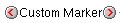
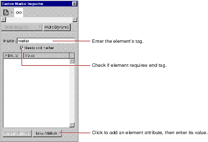

This causes the text to be removed from the form.
 Table of Contents
Table of Contents  Previous Section
Previous Section
To create an HTML element using a custom marker:
 appears in the component window. You can replace the text "Custom Marker" with the content of the element (if any).

You can also enter source editing mode and type the marker and its text directly.
Tip: To save a custom element so you can use it again, save it on a palette. See "Palettes".
Removing Elements or Text From a Container
You can remove an element or text from a containing element. For example, if you've typed some text inside a form, but you decide you want the text to be outside the form:
This causes the text to be removed from the form.
Table of Contents  Next Section
Next Section